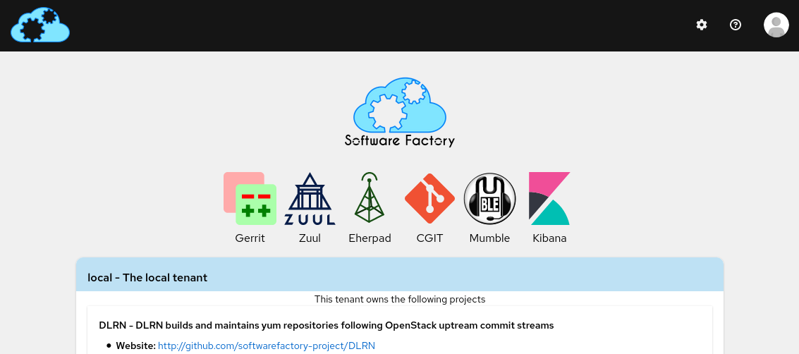
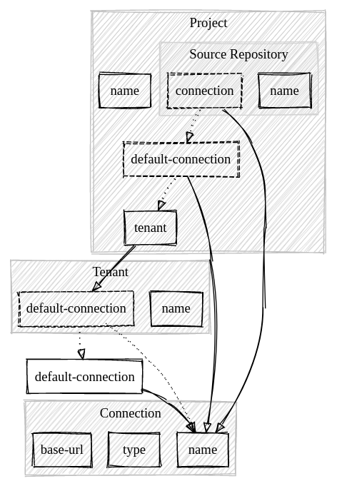
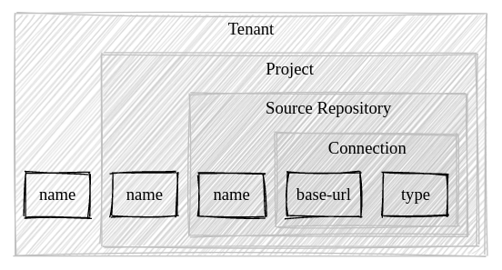

The migration to Gerrit 3.x broke Software Factory's user interface. This led us to rewrite it from first principles. We decided to replace the existing jinja/html/css stack with patternfly-react. After watching the React to the Future talk from the original author of React, we decided to try ReasonML.
This article presents the results of that story's last two sprints.
Why Reason?
Choosing Reason might sound a bit hipster, however, it is effective for the following reasons:
It builds on the javascript runtime, which is arguably the most popular environment. Thus, the code we wrote can run on almost any computer such as mobile devices or node servers.
It features a powerful type inference system that can eliminate most runtime errors. In other words, an entire class of bugs are fixed from the ground up.
It is an opportunity to learn functional programing paradigms which are known to be very effective at managing complexcity.
What is Reason?
Reason is an OCaml syntax that is similar to JSX.
It compiles to javascript using the ReScript compiler.
It builds on years of research and engineering on meta languages (ML) and Reason benefits from the always correct Hindley–Milner type system.
Show me the code!
In this section, we review how we use Reason to manage the Software Factory resources. This is a data model that defines projects, repositories, and groups used by the Software Factory's services.
Using bs-json and reason-react
The first step was to create data types to define the resources of Software Factory.
For example, we defined a Tenant as:
type tenant = { name: string, default_connection: option(string), description: option(string), url: string }
And using the bs-json library we wrote a function to parse its JSON representation:
let parse = json => { name: json |> field("name", string), default_connection: json |> optional(field("default-connection", string)), description: json |> optional(field("description", string)), url: json |> field("url", string) }
We also wrote interfaces to use the patternfly's components with reason-react:
module Card = { [@react.component] [@bs.module "@patternfly/react-core"] external make: ( ~className: string=?, ~children: 'children=? ) => React.element = "Card" }
The binding defines the property types and prevents runtime error when building the web UI.
Here is how we wrote a TenantCard component:
module TenantCard = {
[@react.component]
let make = (~tenant: SF.tenant) =>
<Card key={tenant.name}>
<CardTitle>
<span> {tenant.name |> React.string} </span>
<span> {" - " |> React.string} </span>
<span>
{Option.getWithDefault(
tenant.description,
"The " ++ tenant.name ++ " tenant",
)
|> React.string}
</span>
</CardTitle>
</Card>
}
The model helped us be explicit with edge cases, for example, to show a tenant description, we had to take into account that the description may be missing.
This was promising, however the first implementation revealed issues with the resources model. It was initially designed as a flat structure where tenants, projects and repositories could be defined side by side. Here is an example project configuration:
resources: projects: RPMS: tenant: local description: RPMS Packages source-repositories: - rpms/libuv: zuul/include: []
Tenants and connections can be defined in an adjacent file:
resources: tenants: local: description: "The local tenant." url: "https://softwarefactory-project.io/manage" default-connection: gerrit connections: gerrit: base-url: "https://softwarefactory-project.io/r" type: gerrit
Thus, to display the url of the rpms/libuv repository of the RPMS project, multiple lookups need to be performed:
This is rather complex for our user, and in the following sprint, we designed better data types.
Refactoring
We decided to re-arrange the data types to avoid impossible states such as respository with no connections:
We used the decco library to automatically generate JSON encoder and decoder:
module Connection = { [@decco] type t = | Gerrit(string) | Pagure(string) } module SourceRepository = { [@decco] type t = { name: string, description: option(string), location: Connection.t, } } module Project = { [@decco] type t = { name: string, description: string, [@decco.key "source-repositories"] source_repositories: list(SourceRepository.t) } } module Tenant = { [@decco] type t = { name: string, projects: list(Project.t), description: option(string), } }
Then we wrote a conversion function to process the legacy model into the new representation. For example, the connection information is now resolved once with this function:
let getConnection: (sr, project, tenant) => SFV1.SourceRepository.getConnection(sr) ->Option.getWithDefault( project.connection ->Option.getWithDefault( tenant.default_connection ) )
This was great because the new model doesn't require complicated lookup. For example, here is how the user interface was improved: https://softwarefactory-project.io/r/20002
Thanks to the typesystem, this major refactor went smoothly and we didn't have a single runtime error.
Results
We created three new projects:
- re-sf for the data types and generic utility functions.
- re-patternfly for the patternfly binding.
- sf-ui for the new user interface.
Cons
The IDE tooling could use more polish, for example the LSP server needs to be restarted at some point to pick up new changes.
The ecosystem is relatively young and the new syntax/brand named ReScript is confusing.
The decco library is implemented using PPX which can yield obscure errors.
Getting used to the type checker and IDE takes time.
Functional programing is very different from imperative-style programming and there is a lot to learn.
Pros
The ReScript compiler is extremely fast, and it can build a complete project in a few milliseconds.
Functional libraries are simple to use because the type definition documents most of the required information. This is an improvement over object oriented interface where how to use a foreign code base may not be obvious.
Refactoring and modifying the source code is safe because the type checker acts as an incredibly useful assistant. Afterall, source code is often modified, so any help is more than welcome.
Overall, the functional paradigm features "timeless" primitives that seems more portable than object oriented ones. The implementation we wrote is not specific to Reason and it may be re-written in any functional language. See this blog post for more details.
Conclusion
If the Software Factory community is comfortable with these changes, we will remove the legacy user interface and use this new implementation through that change: https://softwarefactory-project.io/r/#/c/19640/
We think this is the right strategy to manage Software Factory's resources and we are looking forward extending our usage of this new data model.
Cheers